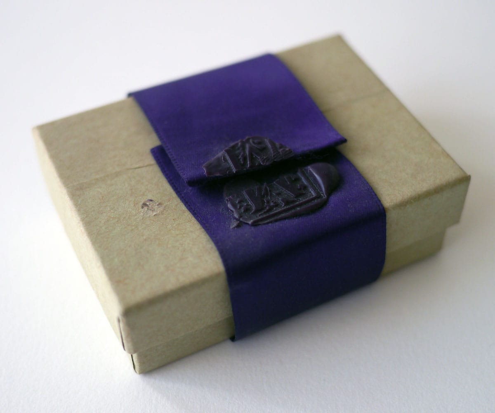
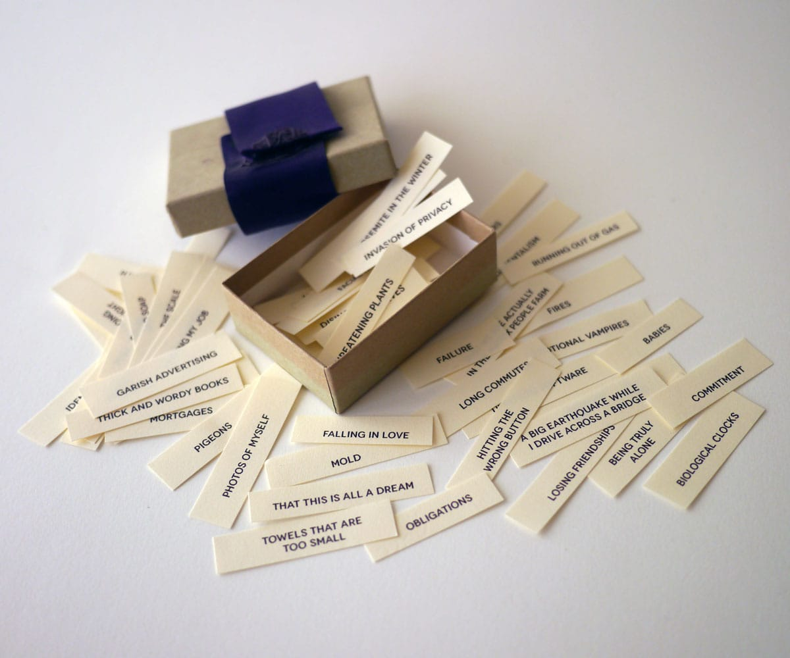

Little Box of Fears
Also made as a conceptual art project, one opens the sealed box to reveal 100 printed fears. Some of these fears are humorous such as THICK AND WORDY BOOKS and MOLD (but anxiety producing nonetheless). Others are more deeply rooted such as the loss of a parent and being alone.

